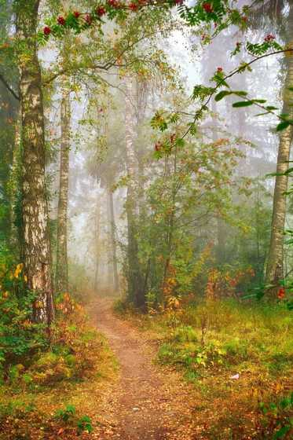
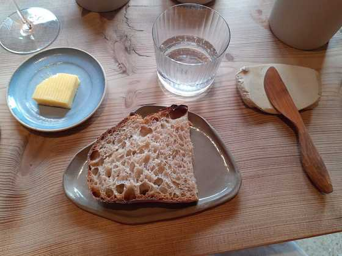
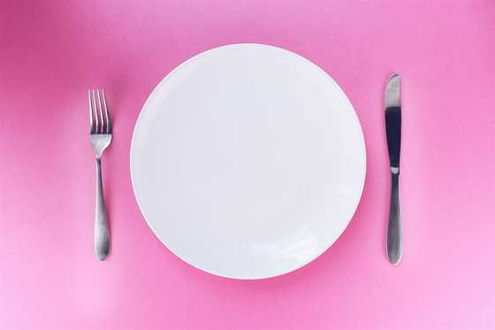
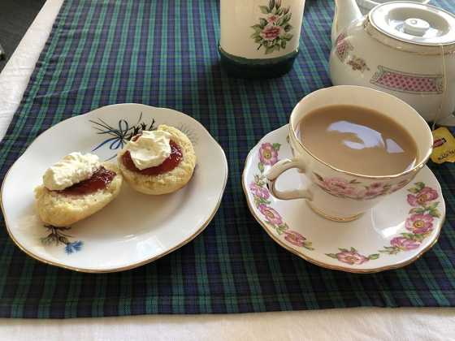
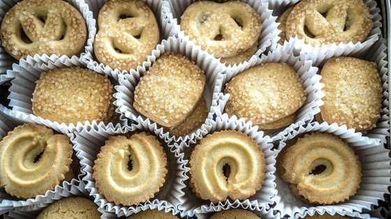
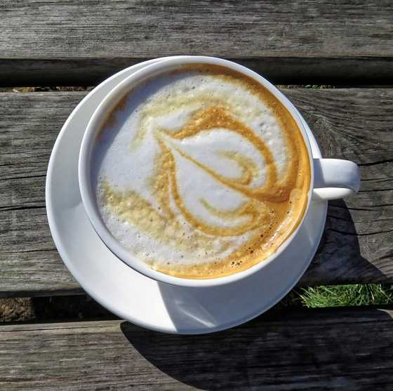

山梨県北杜市大泉町
人生の旅に疲れた日に、
木々のそばで一杯のポタージュを。
ポタージュとおやつcafe matoca は、旬の野菜のポタージュと季節のおやつを楽しめる、森のそばのカフェです。
お店のこと
「旅」の名をもつ、ひと休みの場所。
紹介情報によると、店名の「matoca」はフィンランド語で「旅」を意味するとされています。神戸で12年間お店を営んできた店主が手がけ、北杜市大泉町の緑豊かな静かな場所にあります。店内には店主の好きなものが詰まり、北欧の礼拝堂のような雰囲気と紹介されています。
外に向いたカウンター席から木々や鳥を眺められ、本棚の本や、キャンドル・石鹸などのハンドメイド作品も並ぶと紹介されています。
情報源: 富士の国やまなし観光ネット / note(旅するフリーライター) / Instagram
上記の事実以外の言い回し(見出しなど)は制作側の表現です。






メニュー
野菜のポタージュと、季節のおやつ。
旬野菜のポタージュ
採れたての旬の野菜をたっぷり使い、二十四節気に合わせた食材で作られるものと紹介されています。
季節のおやつ
季節の素材を使ったロウケーキ(ヴィーガン)や、ガトーショコラなどが紹介されています。
価格・内容は変わることがあるため掲載せず、準備中としています。写真はイメージで、実際の提供品ではありません。





口コミ
こんなふうに過ごせたら。
以下は制作側が作成したイメージ例で、実在の声ではありません。
野菜のやさしい味が体にしみて、森の中で少し休んだ気分になりました。
ポタージュ目当ての方(イメージ)
季節のおやつを食べながら、窓の外の木々をぼんやり眺めてほっとしました。
ひとり訪問の方(イメージ)
本や手仕事の作品も楽しくて、つい長居しました。
散策帰りの方(イメージ)
アクセス・ご案内
お店のこと(確認できたものだけ)
| 所在地 | 〒409-1502 山梨県北杜市大泉町谷戸7751 |
|---|---|
| 電話 | 準備中 |
| 営業時間 | 準備中 |
| 定休日 | 準備中 |
| SNS | Instagram @cafematoca |
不定期営業との情報があります。最新の営業日はInstagramをご確認ください。